HeHa Sky View Jogja | Menu, Fasilitas, dan Harga
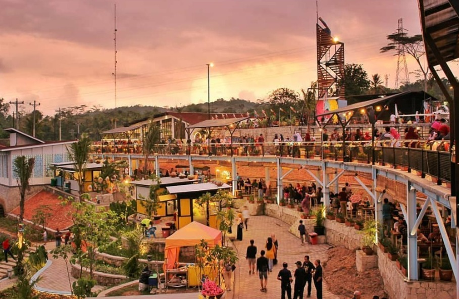Perkembangan kota Jogja kian pesat dari waktu ke waktu. Ada begitu banyak obyek wisata menarik yang bisa dikunjungi. Tak heran bila saat ini banyak pendatang yang membeli rumah di Jogja untuk menetap atau menghabiskan hari tua.
HeHa Sky View Jogja adalah salah satu obyek wisata baru yang saat ini sedang menjadi tren di warga Jogja. Lokasinya sendiri berada di kawasan Gunung Kidul.
Jogja memang memiliki kawasan yang kaya akan panorama alam yang indah. Banyak kawasan pegunungan dan perbukitan, sehingga sangat potensial sebagai tempat untuk destinasi liburan.
Kawasan seperti ini memang sangat tepat sebagai tempat untuk refreshing, karena tidak hanya tersaji keindahan alam, tetapi juga hawa sejuk yang khas benar-benar nyaman dirasakan. Belum lagi jika diolah dan dilengkapi dengan beragam fasilitas seperti spot foto, yang semakin menjadi daya tarik bagi wisatawan.
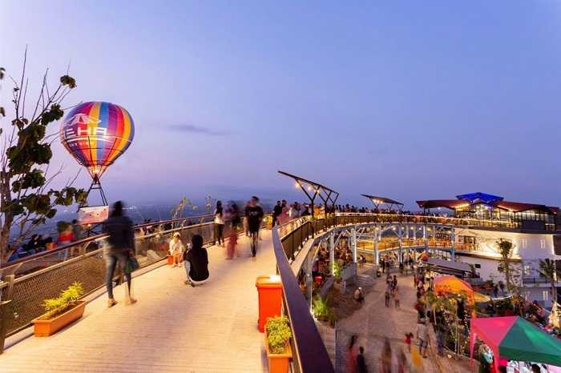Salah satu alasan utama yang menjadikan tempat ini viral adalah karena memiliki spot foto yang bagus untuk berburu foto. Pihak pengelola sengaja membuat tempat ini menjadi lebih keren, dengan desain bangunan yang bagus dan kekinian.
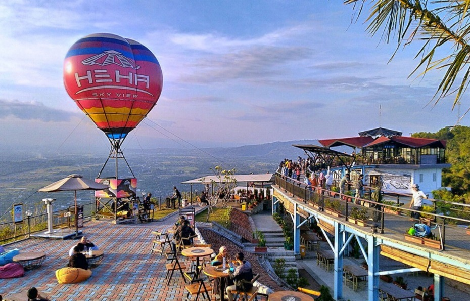Spot foto yang disediakan oleh HeHa Sky View ini terbilang sangat istimewa dan berbeda dari tempat wisata Jogja biasanya. Beberapa spot foto yang paling favorit dan fenomenal di HeHa Sky View Jogja, diantaranya ialah spot teras kaca, sky bridge, dan balon udara.
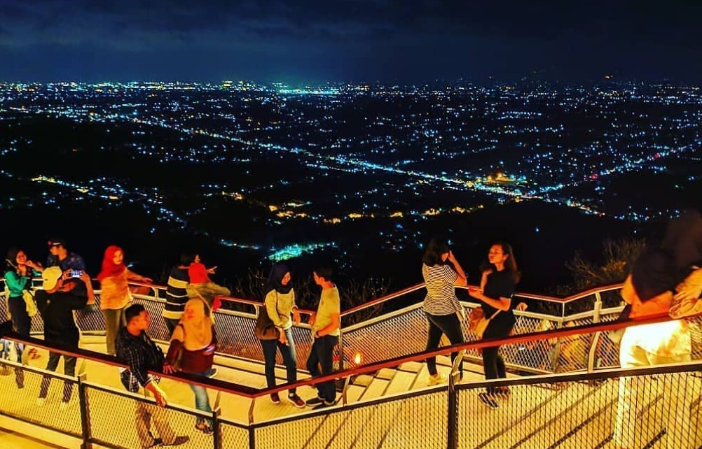Momen senja dan malam di tempat ini semakin ramai pengunjung, apalagi ketika malam minggu. Kamu bisa melihat panorama kota Yogyakarta secara jelas dari ketinggian tempat ini.
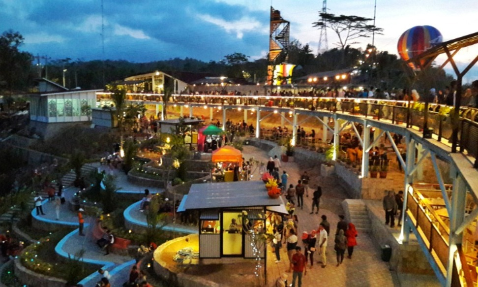Fasilitas HeHa Sky View
Konsep awal tempat ini ialah cafe dan resto, jadi tentunya tak lepas dari aneka makanan lezat yang bisa kamu nikmati di sana. Tentu dengan harga yang sudah ditentukan. Yuk, simak fasilitas lengkap di HeHa Sky View berikut ini.
Lokasi HeHa Sky View Jogja
Lokasi HeHa Sky View Jogja tak terlalu jauh dari Bukit Bintang. Tepatnya di Jalan Dligo – Patuk No. 2, Desa Patuk, Kec. Patuk, Kab. Gunungkidul, Yogyakarta.
Jarak dari pusat kota Jogja hanya sekitar 18 km atau menghabiskan waktu sekitar 45 menit. Karena tempat ini berada di kawasan bukit, maka tentu banyak jalan berkelok. Jadi, kamu harus lebih berhati-hati ya!
Jam Buka:
Harga Menu HeHa Sky View Jogja
Jika kamu ingin menikmati makanan di food court, maka ada banyak sekali menu ala Indonesia, Asia dan Australia yang bisa kamu pilih. Harga menu makanan HeHa Sky View Jogja ini berkisar mulai dari 12 ribu rupiah.
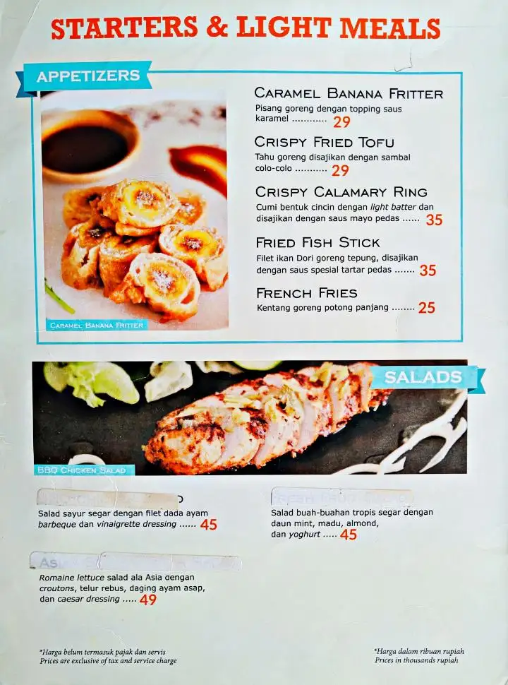 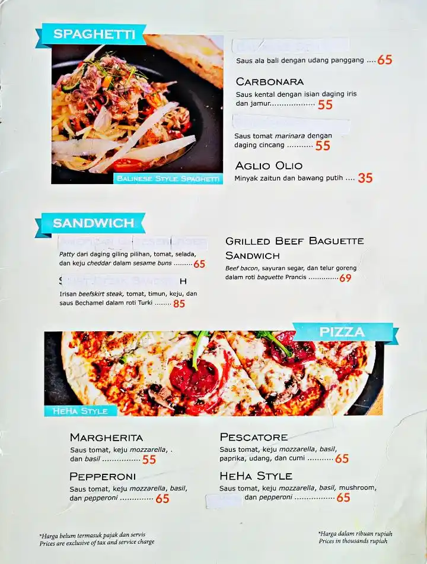 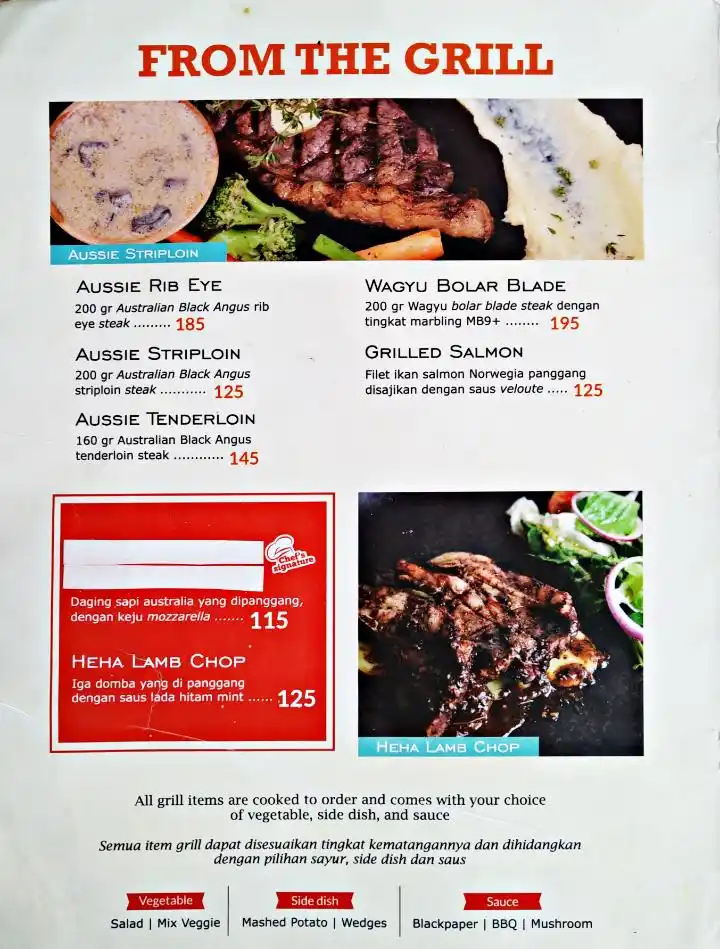 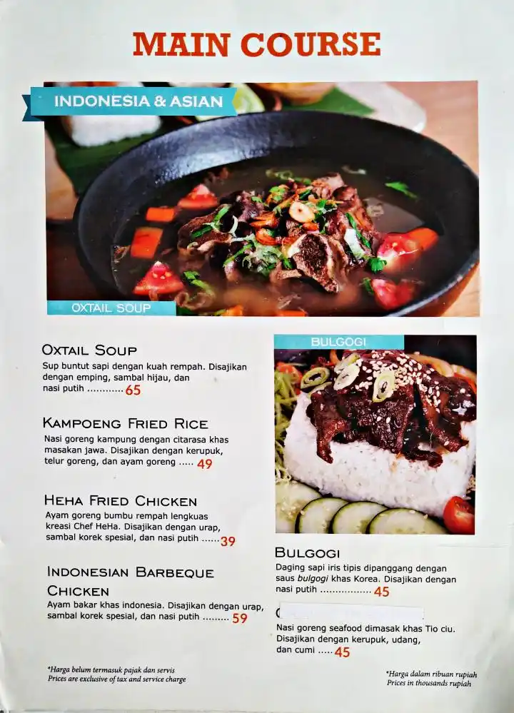 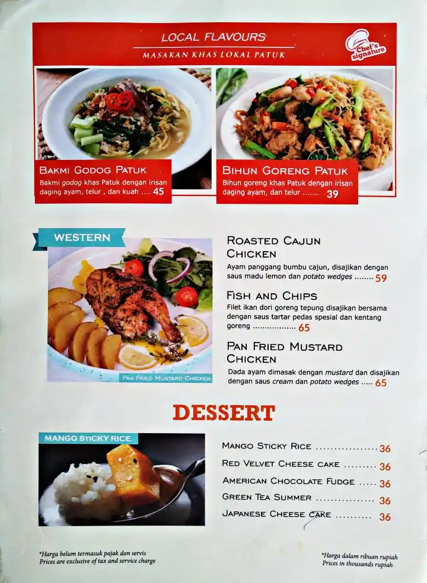 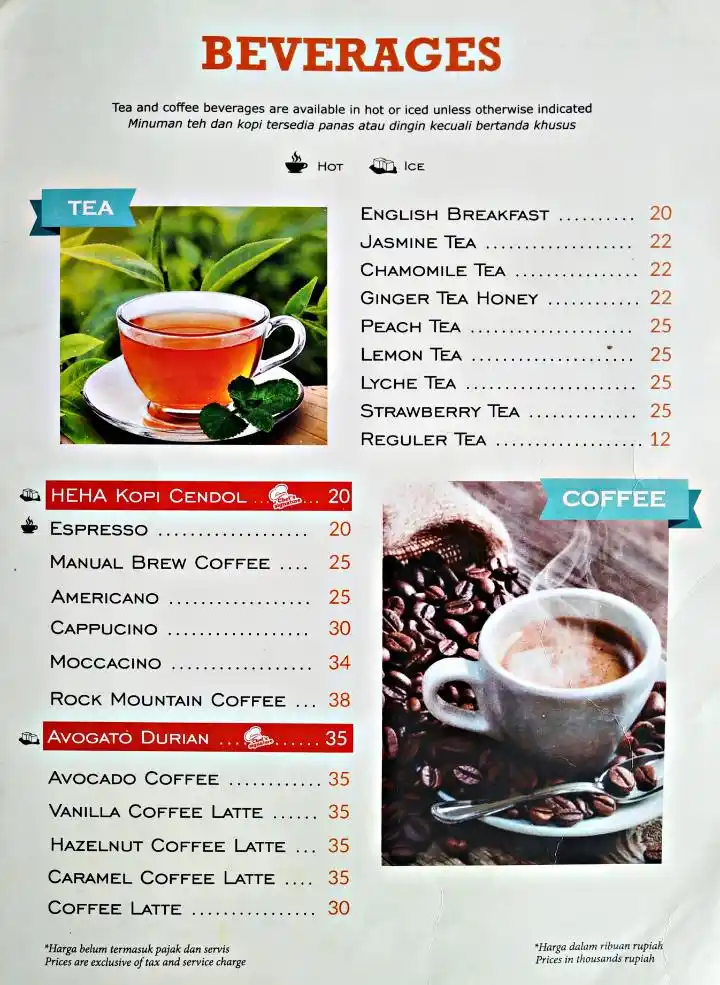 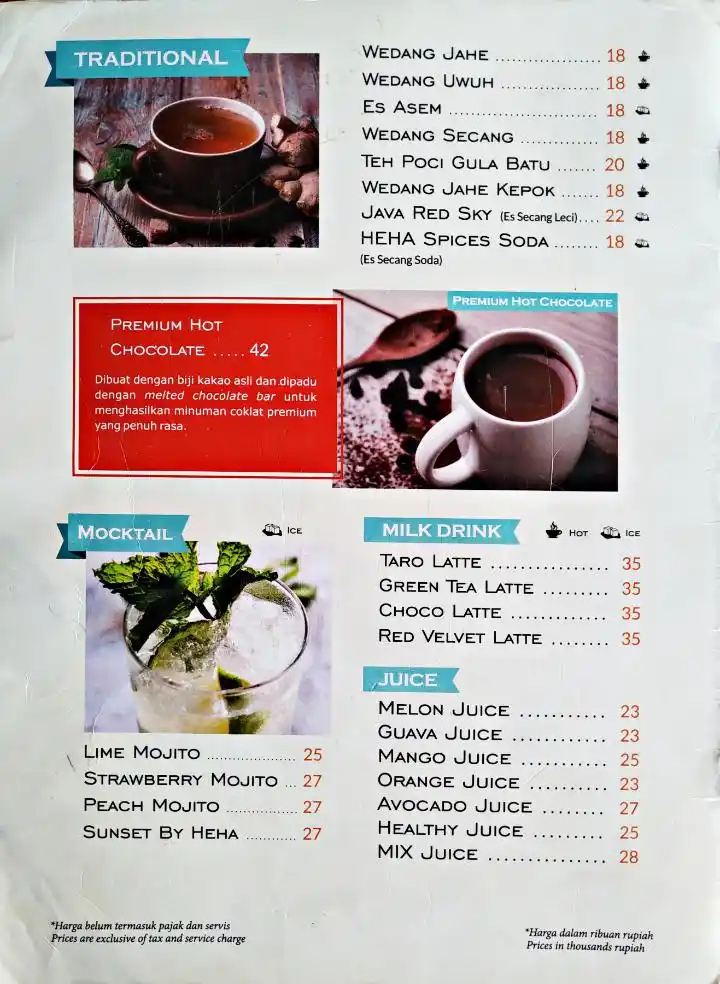Harga Tiket Masuk HeHa Sky View Jogja
Bila ingin memasuki tempat ini, maka setiap orang dikenai biaya sebesar Rp 10.000. Jika ingin berfoto di teras kaca, maka membayar lagi biaya sebesar Rp 30.000. Ada juga biaya jasa foto sebesar Rp 5.000 jika ingin mendapatkan hasil foto yang bagus. Jam operasional mulai pukul 10.00 sampai pada pukul 23.00 WIB.